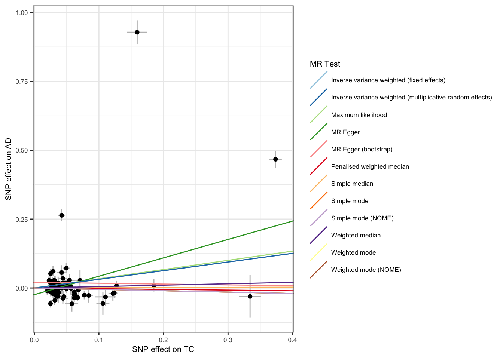
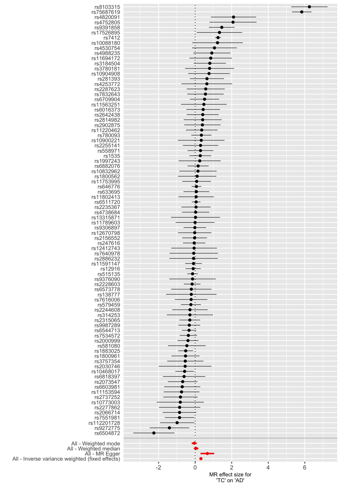
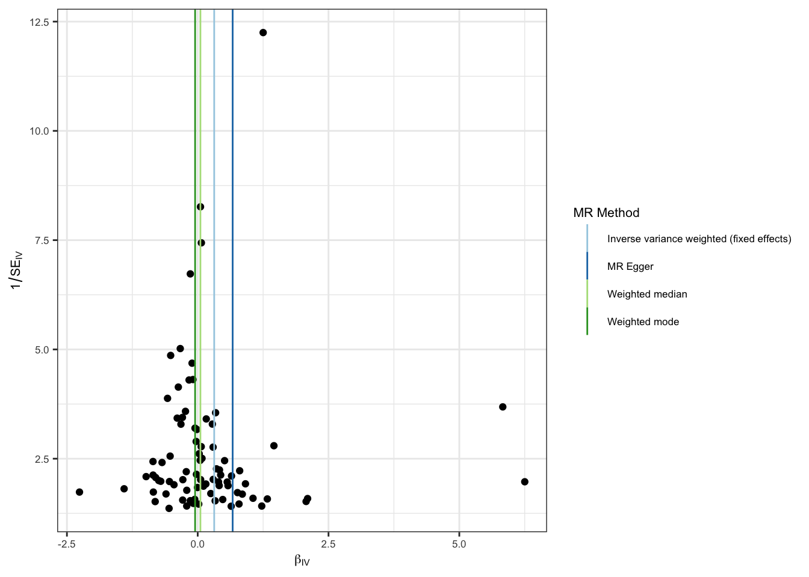
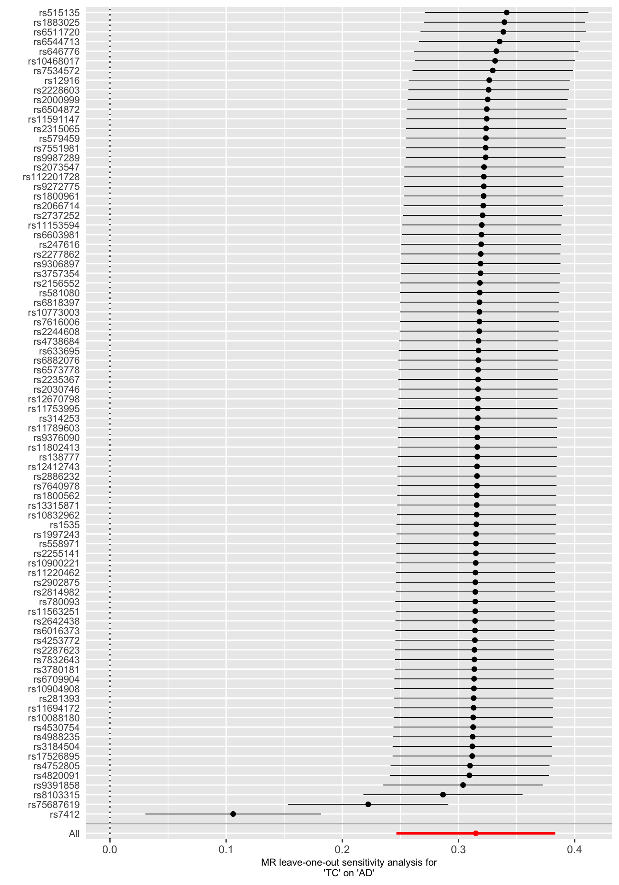

Load R Packages
library(tidyverse) # Data wrangling
library(TwoSampleMR) # MR
library(gt)
# library(LDlinkR) # LD and proxy snps
# library(RadialMR) # Radial MR sensetivity analysis
# library(phenoscanner)library(tidyverse) # Data wrangling
library(TwoSampleMR) # MR
library(gt)
# library(LDlinkR) # LD and proxy snps
# library(RadialMR) # Radial MR sensetivity analysis
# library(phenoscanner)R, TwoSampleMR, MendelianRandomization
IVW: The simplest method for MR causal effect estimation is the inverse variance weighted (IVW) meta-analysis of each genetic instrument’s Wald ratio. This is similar to conducting a weighted regression of SNP-exposure effects against SNP-outcome effects, with the regression line passing through the origin. Fixed effects IVW is the most powerful method for MR analysis and is widely accepted as the primary method. However, it assumes that there is no horizontal pleiotropy and is sensitive to violations of MR assumptions. Random effects IVW relaxes this assumption by allowing each SNP to have a different mean effect, providing an unbiased estimate if horizontal pleiotropy is present in a balanced manner.
Maximum likelihood: The causal effect is estimated by direct maximization of the liklihood given the SNP-exposure and SNP-outcome effects and assuming a linear relationship between the exposure and outcome. May provide more reliable results in the presence of measurement error in the SNP-exposure effects, but assumes that there is no heterogeneity or horizontal pleiotropy.
MR-Egger: The Inverse Variance Weighted (IVW) method can be modified to account for horizontal pleiotropy by including a non-zero intercept. This allows for an estimation of net horizontal pleiotropic effects even if they are not balanced or directional. However, this approach assumes that the horizontal pleiotropic effects are uncorrelated with the SNP-exposure effects, known as the InSIDE assumption. Despite this, the MR-Egger method may have lower precision, leading to a reduction in statistical power to detect causal relationships.
Mode Based Estimators: Clusters SNPs into groups based on similarity of their causal effects and returns the causal estimates based on the cluster with the largest number of SNPs. Weighting each SNPs contribution to the clustering by the inverse variance of its outcome of its outcome effect can be also be used. Returns an unbiased causal estimate when all the SNPs in the largest cluster are valid instruments.
Median Based Estimators: Estimating the causal effect by taking the median effect of all avaliable SNPs allows for only half the SNPs needing to be valid instruments. Weighting the contribution of each SNP by the inverse variance of its association with the outcome allows for stronger SNPs to contribute more towards the estimate.
mr_dat <- read_csv('data/harmonized_data.csv')mr_res <- mr(mr_dat, method_list = c(
"mr_two_sample_ml", "mr_egger_regression", "mr_egger_regression_bootstrap",
"mr_simple_median", "mr_weighted_median", "mr_penalised_weighted_median",
"mr_ivw_fe", "mr_ivw_mre",
"mr_simple_mode", "mr_weighted_mode", "mr_weighted_mode_nome", "mr_simple_mode_nome"
))res_single <- mr_singlesnp(mr_dat, all_method = c("mr_ivw_fe", "mr_egger_regression", "mr_weighted_median", "mr_weighted_mode")) %>% as_tibble()In the fixed effects IVW analysis, higher genetically predicted total cholesteroal levels are associated with increased risk of Alzheimer’s disease. However, the majority of our pleiotropy robust methods are non-significant, suggesting that the causal effects may be biased.
| method | nsnp | b | se | pval |
|---|---|---|---|---|
| Maximum likelihood | 84 | 0.33 | 0.04 | 9.6 × 10−20 |
| MR Egger | 84 | 0.67 | 0.19 | 7.1 × 10−4 |
| MR Egger (bootstrap) | 84 | −0.04 | 0.07 | 0.314 |
| Simple median | 84 | 0.01 | 0.06 | 0.908 |
| Weighted median | 84 | 0.05 | 0.07 | 0.454 |
| Penalised weighted median | 84 | −0.03 | 0.06 | 0.689 |
| Inverse variance weighted (fixed effects) | 84 | 0.31 | 0.03 | 1.7 × 10−19 |
| Inverse variance weighted (multiplicative random effects) | 84 | 0.31 | 0.12 | 0.007 |
| Simple mode | 84 | −0.05 | 0.12 | 0.689 |
| Weighted mode | 84 | −0.05 | 0.07 | 0.488 |
| Weighted mode (NOME) | 84 | −0.05 | 0.08 | 0.518 |
| Simple mode (NOME) | 84 | −0.05 | 0.13 | 0.698 |
The relationship between SNP effects on the exposure and SNP effects on the outcome can be visualized through a scatter plot. The slopes of the lines correspond to the estimated causal effect for each method.
scatter_p <- mr_scatter_plot(mr_res, mr_dat) scatter_out_p <- scatter_p[[1]] + theme_bw() +
guides(color=guide_legend(ncol =1)) +
theme(
text = element_text(size = 8),
)
scatter_out_p
Forest plots can be used to display the Wald ratio for single SNPs and their combined effects.
forrest_p <- mr_forest_plot(res_single)
forrest_p[[1]]
Diagnostics and sensetivity analyses are used to evaluate if the causal estimates are robust to violations of MR underlying assumptions.
The intercept term in MR-Egger regression can provide an indication of the presence of directional horizontal pleiotropy, and help to determine the robustness of the MR results. Directional horizontal pleiotropy refers to the situation where a genetic variant used as an instrumental variable in a Mendelian randomization (MR) study influences the exposure and outcome in the same direction. This can result in biased estimates of the causal effect of the exposure on the outcome, and compromise the validity of the MR results.
We observe that the MR-Egger regression intercept for Total cholesterol onto AD is significant, suggesting that the IVW causal estimate is biased by directional horizontal pleiotropy.
res_pleio <- mr_pleiotropy_test(mr_dat)
res_pleio %>%
select(-id.exposure, -id.outcome, -outcome, -exposure) %>%
gt() %>%
fmt_number(
columns = c('egger_intercept', 'se')
) %>%
fmt_number(
columns = pval,
rows = pval > 0.001,
decimals = 3
) %>%
fmt_scientific(
columns = pval,
rows = pval <= 0.001,
decimals = 1
)| egger_intercept | se | pval |
|---|---|---|
| −0.02 | 0.01 | 0.023 |
Heterogeneity refers to the variability or diversity in the relationship between an exposure variable and an outcome variable across different genetic variants that are used as instrumental variables. Heterogeneity can arise due to several factors, including differences in the strength of the genetic associations with the exposure and outcome, differences in the direction of effect, or differences in the way that the genetic variants interact with other variables that may confound the relationship. Heterogeneity can pose a challenge for the validity of the MR results, as it may indicate that the assumption of a consistent relationship between the exposure and outcome across different SNPs is not met. If heterogeneity is present, it can indicate that the underlying causal relationship between the exposure and outcome is complex and cannot be captured by a single SNP or set of SNPs.
We can estimate heterogeneity using Cochran’s Q Test. We observe that there is significant heterogeneity in the IVW and MR-Egger analysis, further highlighting that the IVW causal estimates are likely biased.
# Heterogeneity statistics
res_het <- mr_heterogeneity(mr_dat, method_list = c("mr_egger_regression", "mr_ivw"))
res_het %>%
select(-id.exposure, -id.outcome, -outcome, -exposure) %>%
gt() %>%
fmt_number(
columns = Q
) %>%
fmt_number(
columns = Q_pval,
rows = Q_pval > 0.001,
decimals = 3
) %>%
fmt_scientific(
columns = Q_pval,
rows = Q_pval <= 0.001,
decimals = 1
)| method | Q | Q_df | Q_pval |
|---|---|---|---|
| MR Egger | 862.04 | 82 | 2.1 × 10−130 |
| Inverse variance weighted | 918.33 | 83 | 5.2 × 10−141 |
Funnel plots in which the estimate for each SNP is plotted against its precision can be used to visually inspect for horizontal pleitropy, with asymmetry indicative of invalid instruments.
funnel_p <- mr_funnel_plot(res_single)
funnel_out_p <- funnel_p[[1]] + theme_bw() +
guides(color=guide_legend(ncol =1)) +
theme(
text = element_text(size = 8),
)
funnel_out_p
Leave-one-out analysis can be used to determine if a MR causal estimate is driven or biased by a single SNP that might have a particularly large horizontal pleiotropic effect. The MR causal effect is re-estimated by sequentially droping one SNP at a time.
We observe dramatic changes in the MR causal estimates when two SNPs - rs7412 and rs75687619 - are droped from the analysis. This suggests that the IVW estimate is particularly sensitive to the inclusion of these variants and that they are potentially outliers.
# Leave-one-out analysis
res_loo <- mr_leaveoneout(mr_dat, method = mr_ivw_fe) %>% as_tibble()
loo_p <- mr_leaveoneout_plot(res_loo)
loo_p[[1]]
In the IVW analysis we observed that higher genetically predicted total cholesterol levels were causaly associated with an increased risk of Alzheimer’s disease. However, the majority of our sensitivity analysis are non-significant suggesting that our IVW estimated is biased. Furthermore, while the MR-Egger causal estimate is significant, this is likely due to violations of the InSIDE assumption. The robustness of our causal estimate is further called into question by the presense of significant heterogeneity, horizontal pleitropy, and outliers.